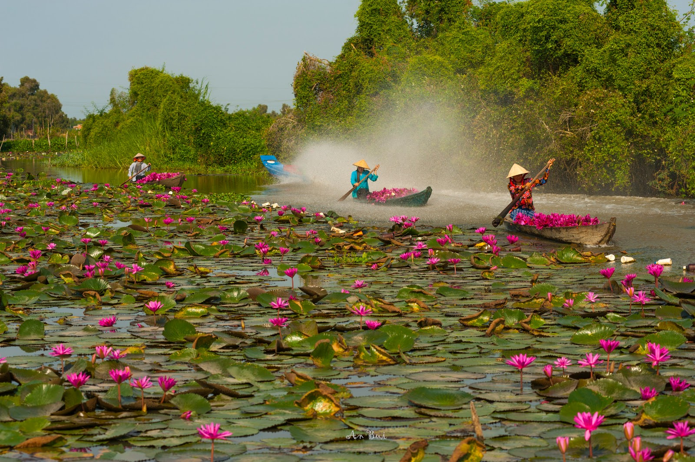
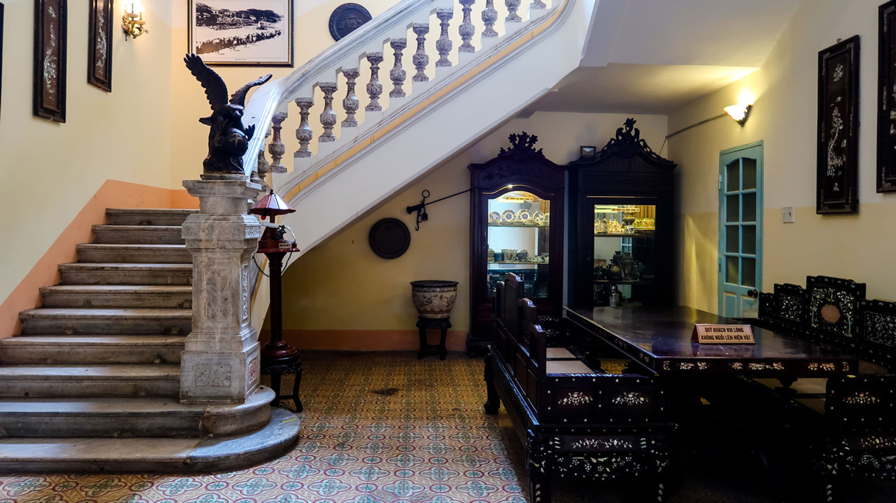
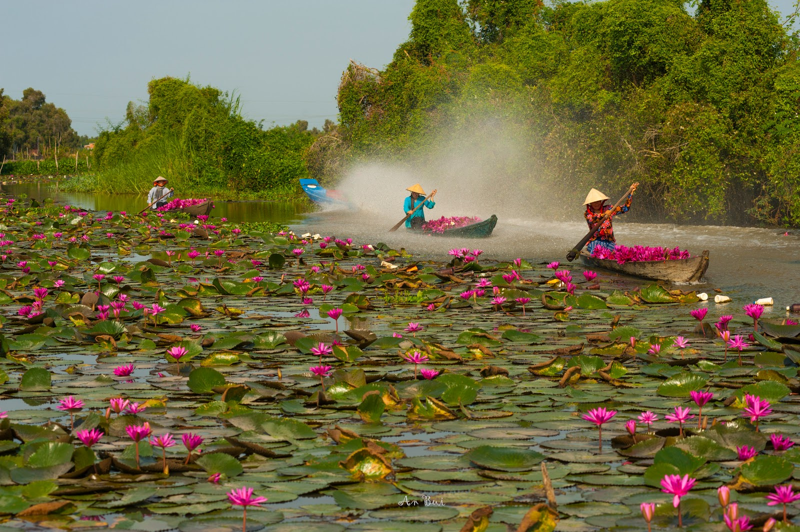
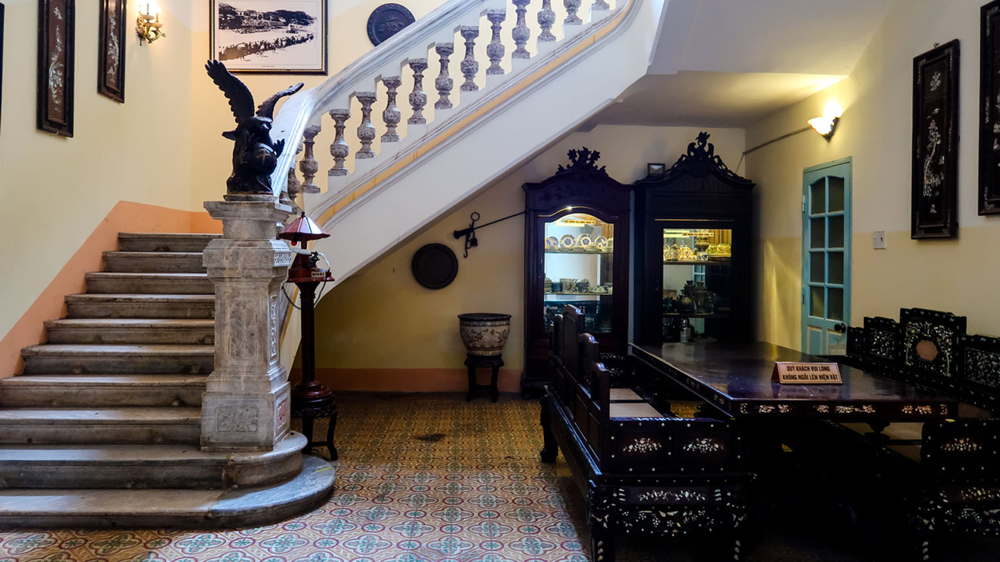

Đánh giá của khách hàng
Review 1 – Anh Phong, chị An (TP.HCM)
"Chúng mình chọn tour này vì muốn chill sông nước mà vẫn có chỗ check-in đẹp. Cánh đồng quạt gió với cực Nam là hai điểm yêu thích nhất. Ăn uống ngon, tối du thuyền Cần Thơ lãng mạn nữa. Sẽ giới thiệu cho bạn bè!"
Review 2 – Nhóm bạn trẻ quận 7
"Cả nhóm 8 đứa đi để đổi gió cuối tuần, kết quả ai cũng mê luôn. Sống ảo từ miệt vườn đến Đất Mũi, ăn hải sản Cà Mau no căng. Đoàn đông vui, dễ kết bạn mới. 10/10, lần sau chắc chắn book lại"
Review 3 – Anh Tuấn (Hà Nội)
"Tour miền Tây này chill thật sự luôn! Chợ nổi buổi sáng đẹp mê, Đất Mũi thì tự hào cực kỳ. Lịch trình vừa đủ, không mệt mà vẫn đi được nhiều điểm đẹp. HDV vui tính, chụp ảnh có tâm lắm. Đi về album đầy ảnh sống ảo, đáng tiền!"